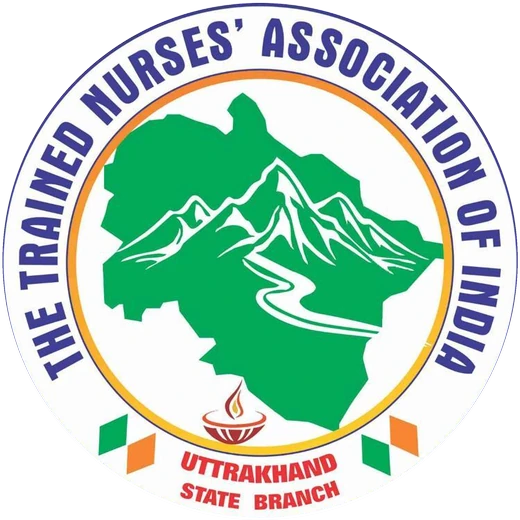

Forensic Medicon 2027
48th Annual Conference of the
Indian Academy of Forensic Medicine

Medicine
Nursing
ForensicsJudiciary

Police
Society
Conference theme
Translational Forensics
Uniting Medicine, Nursing, Forensics, Judiciary, Police and Society
2nd–6th February2027
Five days of scientific sessions · skill labs on 2nd and 3rd February
Department of Forensic Medicine & Toxicology, Himalayan Institute of Medical Sciences
Swami Rama Himalayan University, Dehradun, Uttarakhand
—Days
—Hours
—Minutes
—Seconds
Indian Academy of Forensic MedicineEst. 1972 · Parent body
Swami Rama Himalayan UniversityNAAC A+ · Host institution

Trained Nurses' Association of IndiaUttarakhand State Branch